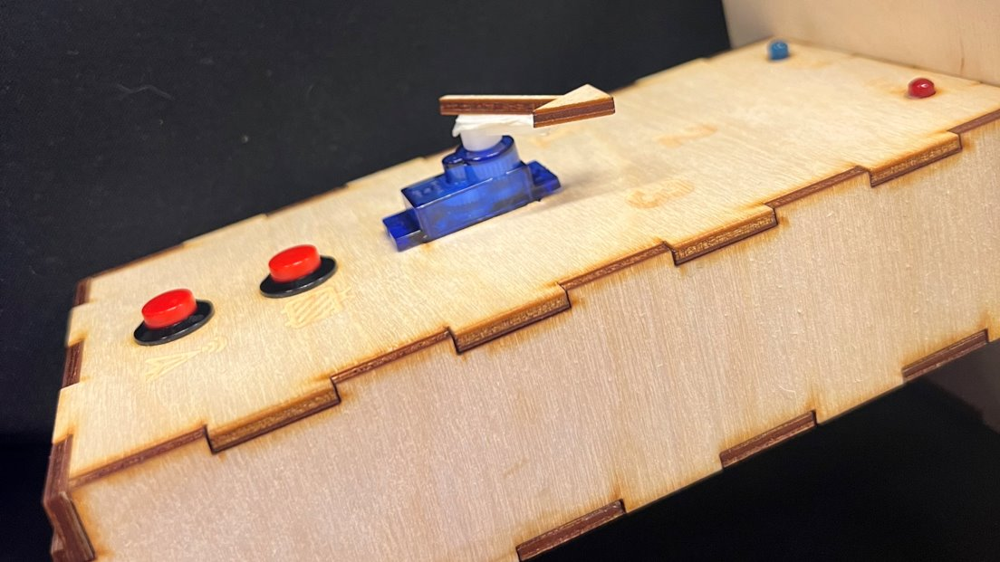

de BedMaster
19-10-2022
Hogeschool Rotterdam
Sijmen, Viggo, Timon, Michiel
Laatst bewerkt op: 06-11-2022
De bedmaster is een serie van apparaten dat je kan aansturen met een afstandsbediening. Met de afstandsbediening kun je bijvoorbeeld je licht dimmen of de hoogte van je gordijn instellen. Hieronder staat het volledige werkproces beschreven.
We zijn begonnen met het uitvoeren van een aantal testjes, en we hebben besloten om met de infrarood sensor te gaan werken door een afstandsbediening te maken die onze eigen apparaten kan aansturen, zoals een gordijn die open gaat of een muziekje dat afspeelt.
Planning
Voor dit project hebben we een duidelijk to do list gemaakt in github en duidelijke deadlines opgesteld. Ook hebben we een taakverdeling gemaakt voor de verschillende modules.
In deze to do list hebben we van te voren een aantal items gezet en die hebben we gaandeweg bijgehouden met onze taken. Iedereen kon een taak toevoegen of verwijderen, dus we konden zo met elkaar communiceren wat er allemaal klaar was, ook als het niet iemands taak was.
Verder hebben we ook deadlines gesteld aan de verschillende modules en bijgehouden welke projecten langer de tijd nodig hadden en welke projecten op tijd af waren. De groene modules zijn binnen de gestelde deadline afgemaakt. De oranje module had extra tijd nodig om afgemaakt te worden en de rode module hebben we geschrapt.
Ik heb hier de taakverdeling weggezet, met de taakverdeling die we besproken hadden tijdens de vorige sprint en met een lijstje wat er daadwerkelijk door iedereen is gedaan.
Ook heb ik nog in een kalender bijgehouden wanneer wat gereed was. De blauwe delen zijn onze eigen gestelde deadlines, en betekenen ook dat die modules voor 99% klaar zijn. Op de laatste dag hebben we ervoor gezorgd dat alles 100% gereed was voor de presentatie, zodat we tussendoor altijd wel aanpassingen konden doen.
Proces
We hebben een aantal ontvangers bedacht, maar ook de afstandsbediening zelf gebouwd. Ik heb hier het werkproces bijgehouden.
Ik ben begonnen met het ontwerpen van de afstandsbediening, zo heb ik de layout van de knopjes bedacht en het in hout gegraveerde design gemaakt. Ik heb de stukken hout aan elkaar gelijmd en Viggo heeft de lampjes gesoldeerd. We hebben ook zelf de cablemanagement bedacht en onze 'handtekening' verstopt aan de binnenkant van de afstandsbediening.
Wel hebben we binnen het team steeds feedback uitgewisseld op het design van de afstandsbediening. Zo hadden we bijvoorbeeld de icoontjes die op de voorkant gegraveerd staan eerst op kleine blokjes hout uitgesneden om die te kunnen verplaatsen voor de locatie van knoppen. We zijn uiteindelijk met het team op de perfecte layout gekomen. Dit hebben we met bijna alles gedaan omtrent het design van het apparaat. We hebben ook meerdere keren geëxperimenteerd met verschillende doosjes waar de elektronica in gehuisd kan worden, zoals bijvoorbeeld met afgeronde hoeken of verschillende knopjes. Ook is een voorbeeld de servo die de kanalen aangeeft, het eerste idee was namelijk om dat met lampjes te doen, maar we vonden het leuker om met de servo te proberen.

Woensdag 5 oktober:
We hebben gebrainstormd over de afstandsbediening en de ontvangers, wat voor nieuwe dingen we wilden maken en hoe we die zouden maken. Ik heb hier kort opgeschreven wat we bedacht hebben:
- Muziek module, je kan muziek aan en uit zetten.
- Gordijn module, je kan het gordijn op afstand open en dicht doen.
- Knop module, je kan elke knop in je huis bedienen door met een servo op een knop te drukken.
- Alle ontvangers moeten hetzelfde doosje en en logo hebben, om uniform te blijven.
Ik ben gaan experimenteren met de servo voor de knop module en ik heb samen met Viggo het doosje van de servo uitgesneden.

Donderdag 6 oktober
Ik had het idee dat de ontvangers knopjes nodig hebben om ze ook zonder afstandsbediening te laten werken en om ook de ontvangers van kanaal te kunnen laten veranderen. Ook heb ik besloten dat er iets van een indicatie nodig is die aangeeft in welk kanaal de ontvanger staat en wat de ontvanger doet. Ik ben gaan experimenteren met lampjes en knopjes, maar ben tot de conclusie gekomen dat we externe knoppen en een rgb LED lampje nodig hebben dat verschillende kanalen kan aangeven met verschillende kleuren (in plaats van elk kanaal een eigen lampje te geven), dus die heb ik toen na overleg besteld.

Maandag 10 oktober
We zijn verder gegaan aan de ontvanger. Ik heb een design gemaakt om erop te zetten met passende gaatjes voor de externe knopjes, lampje en logo die we op alle ontvangers kunnen zetten. Viggo kwam met het idee om een draaiknop op de afstandsbediening te maken en om een seven segment display toe te voegen aan de afstandsbediening om zo tien kanalen te hebben in plaats van drie. Viggo en ik zijn toen samen gaan experimenteren met de mogelijkheden qua code en qua bedrading. We zijn tot de conclusie gekomen dat de draaiknop zeker een mogelijkheid is en we hebben toen een nieuwe bovenkant van de afstandsbediening gemaakt met een icoontje en plek voor de draaiknop. Ook het seven segment display hebben we besteld, maar hebben we nog niet verwerkt in de voorkant, aangezien we nog steeds niet helemaal zeker zijn of dat we de tijd hebben om de hele programmering om te gooien.
Woensdag 12 oktober
Viggo en ik hebben meegedaan aan een cursus 3D printen om onze kennis te verbreden en het misschien toe te passen in de bedmaster, helaas zijn we tot de conclusie gekomen dat we functionaliteit voorrang moeten geven op het ontwerp, omdat we veel ambitieuze ontvangers willen maken en we alle tijd daarvoor nodig hebben. Verder heb ik aan de code gewerkt die de knopjes bestuurd en de externe NEOPIXEL aan de bovenkant van kleur kan laten veranderen en die ervoor zorgt dat de NEOPIXEL dimt als er geen input van de gebruiker is ontvangen, zodat je niet wakker blijft van het licht 's nachts. Ook hebben we besloten om de muziek module te laten vervallen en het muziek idee te combineren met het gordijn. In plaats van een muziek module hebben we een dimbare lamp bedacht die je kan dimmen met de potentiometer. Ik heb een doosje gemaakt voor dit dimbare licht en ik ben begonnen aan de code voor dit dimbare licht. Ook heb ik een doosje gemaakt voor het gordijn, maar dit doosje was niet goed, dus die hebben we weggeegooid, daarnaast hebben we ook na overleg besloten om het seven segment display te laten varen, omdat het te veel tijd kostte om nog een nieuw voorkantje te maken en dat de volledige code opnieuw schrijven de moeite niet waard was, omdat we toch maar drie ontvangers konden maken.
Maandag 17 oktober
Ik heb een stukje gordijn gevonden die we kunnen gebruiken, dus de anderen hebben een doosje voor het gordijn ontworpen. Ik ben bezig geweest met de switch module opnieuw in elkaar te zetten omdat hij kapot was gegaan in vervoer. Verder heb ik de code voor het dimlicht werkende gekregen met behulp van onze peercoach.
Dinsdag 18 oktober
Ik heb samen met Viggo en Michiel het doosje voor het gordijn aangepast aan de correcte formaten en de gaten voor het lampje en de knopjes uitgesneden. Ook hebben we besloten om de muziek volledig te laten vallen en om ons te focussen op het gordijn omdat we denken dat dat de klapper op de vuurpijl is als het werkt. Thuis heb ik het verbeterde doosje in elkaar gezet en de bedrading van het doosje gemaakt. Verder heb ik de code van het dimlicht aangepast zodat het ook werkt met het gordijn.
Woensdag 19 oktober
We hebben 's ochtends allemaal de apparaten getest en de bugs uit de code gehaald. Verder hebben Viggo en ik een aantal Halloween decoraties gehaald om de apparaten in thema te brengen. Ook hebben we de laatste puntjes op de i gezet door alles extra goed vast te lijmen en alles nog een keer na te lopen voor de presentaties.
Hoe werkt de BedMaster?
De afstandsbediening werkt door opdrachten via infrarood te communiceren naar ontvangers. Dit werkt in zogenaamde kanalen, beide apparaten moeten in hetzelfde kanaal staan om te kunnen communiceren. De afstandsbediening zendt ook de waarde van de draaiknop op de afstandsbediening via infrarood naar de ontvanger. De afstandsbediening heeft een servo om aan te wijzen in welk kanaal de afstandsbediening staat en twee indicatie lampjes. Het rode lampje gaat knipperen als er een ontvanger in range is, en het blauwe lampje gaat aan als de afstandsbedingen zeker weet dat de ontvanger de opdracht heeft uitgevoerd. Als de ontvanger de opdracht binnen krijgt voert hij uit wat hij moet doen, er gaat bijvoorbeeld een servo bewegen. Met de informatie van de draaiknop kan het apparaat bijvoorbeeld een lampje feller laten branden. Met deze waarde zou de ontvanger nog veel meer kunnen doen dan dat wat we hebben gemaakt, zoals bijvoorbeeld het volume van muziek regelen, de kleur van licht veranderen, de deur op een kier zetten, etc. Alle ontvangers hebben een indicatie lampje die met een kleur aangeeft in welk kanaal het staat, en de kleur geel wordt als er een opdracht ontvangen wordt, als visuele feedback. Ook hebben alle ontvangers twee knoppen, zodat de ontvanger van kanaal kan veranderen én zodat de ontvanger ook nog werkt zonder afstandsbediening. Al dit heb ik geprogrammeerd en getest. Elk apparaat gebruikt dezelfde code, wat dus betekend dat er maar een bestand is voor alle programmering van alle apparaten.
Terugblikkend zie ik dat ik meer werk heb verzet dan de rest van mijn team, terwijl we dit beter hadden kunnen verdelen. Ik denk dat dit vooral aan mij ligt, aangezien ik graag dingen op mijn manier doe omdat dat meestal wel werkt, en de rest moet daar dan aan geloven. In het volgende teamproces moet ik daar beter op letten, en ook de manieren van een ander moet willen proberen.
De presentatie
De presentaties vonden plaats op een technische halloween markt. We gingen één op één ons product presenteren aan onze doelgroep. Onze stakeholder voor het product was Viggo, hij ligt vaak in zijn bed en dan is hij toch te lui om bijvoorbeeld zijn gordijn omhoog te doen of om het licht aan te zetten. In principe zijn de stakeholders dus luie mensen die graag nog wat langer 's ochtends in bed blijven liggen en mensen die zich graag nog een keer omdraaien. Dit soort mensen houden vooral van een korte bondige uitleg zonder al te veel details die in het moment niet echt uitmaken. Net zoals bij sprint 2 gebruiken we daarom een kort en krachtige aanpak waarin we heel snel het probleem en de stakeholder schetsen. Ook het taalgebruik passen we aan op de vooral jonge mensen die van dit product gebruik zouden willen maken, dus niet te formeel. Om deze reden hebben we als team er ook voor gekozen om een kleine powerpoint met vrijwel alleen plaatjes te vertonen, die niet alle aandacht trekt, maar wel nuttige informatie aan bijstanders verleent, zoals waar ze feedback kunnen geven. Mijn presentatie bestond daarom vooral uit één op één op een demonstratie van het product, om de stakeholders zelf het product te laten ervaren.
Reflecterend op de eerste presentatie die ik heb gegeven verliep die redelijk stroef, het apparaat deed het niet direct en ik moest er nog een beetje inkomen. Na dit eerste filmpje ging het steeds soepeler en verliep de presentatie telkens goed. Wel denk ik dat de inhoud van de presentatie wat breder had gemogen. Zo denk ik dat ik niet per se de stakeholder duidelijk heb benoemd, maar de informatie meer verwerkt heb in het openingspraatje. Ik had nog specifiek kunnen benadrukken dat dit apparaat is bedoeld voor mensen die zich graag nog een keer omdraaien. Ook uit de feedback blijkt dat ik de stakeholder duidelijker had kunnen maken.
Feedback
De feedback op een vorige versie van het project was vooral dat de ontvangers beter uitgewerkt zouden kunnen worden en dat het uiterlijk van het geheel verbeterd zou kunnen worden. We hebben als team besloten dat we ons het beste konden focussen op de ontvangers en dat het als soepel geheel zou werken, in plaats van het uiterlijk te verbeteren. Het uiterlijk kan later altijd nog aangepast worden.
Ik heb nieuwe doelen voor deze sprint gesteld aan de hand van de SMART denkwijze en aan de hand van de feedback op het vorige project:
- Specificeer je doel:
- Ik wil drie verbeterde ontvangers maken en de feedback die ik ontvang beter toepassen.
- Ik wil dit binnen de tijd bereiken door middel van de bestaande afstandsbediening uit sprint twee te hergebruiken.
- Maak je doel meetbaar
- Ik wil tussentijds bijhouden wat ik gedaan heb per dag
- We willen een to do list bij gaan houden op github
- We willen een to do list bij gaan houden op github
- We zijn bereid om bepaalde dingen te laten vallen als ze te hoog gegrepen blijken te zijn. (achteraf natuurlijk de muziek module en het seven segment display)
- Stel een realistisch doel
- We willen ons beperken tot het ontwikkelen van ontvangers, en dus de afstandsbediening hetzelfde ontwerp te houden. We houden ons daarmee aan de feedback van de vorige sprint, wat voornamelijk was dat de ontvangers beter uitgewerkt zouden kunnen worden.
- Maak je doel tijdgebonden
- We hebben natuurlijk een deadline voor het hele project, maar ook voor elke ontvanger hebben we een deadline aangesteld. We hebben onszelf twee werkdagen per ontvanger gegeven, omdat het anders onmogelijk wordt om drie nieuwe apparaten te bouwen en te programmeren binnen twee weken.
Tijdens het project hebben we binnen het team ook een aantal feedback rondes in de vorm van brainstorm sessies gehouden. Zo hebben we feedback gegeven op de werking van de afstandsbediening waardoor ik wist wat er verbeterd moest worden qua code. Ook zijn we door middel van feedback erachter gekomen dat sommige doelstellingen onhaalbaar waren met de tijd een materiaal dat we beschikbaar hadden. Zo hebben we aan elkaar gevraagd wat het nut was van de muziek, en we hebben besproken wat het nut was van meer kanalen. Door feedback zijn we dus verder gekomen en hebben we onnodige toevoegingen achter ons gelaten.
Tijdens de markt hebben we ook om feedback gevraagd over het product, maar ook over de presentatie:
-
Product:
- Meerdere modules gebruikt is heel cool, het gat voor de infrarood misschien wat groter maken zodat die vaker kan lezen.
- Heel tof product, enige tip is eigenlijk het uiterlijk wat aantrekkelijker.
- Project ziet er goed uit. Volledig gebruik van microbits.
- Uitvoerige uitwerking, tof dat jullie zoveel verschillende projecten hebben toegevoegd.
- Super cool, de gordijn functie is mooi gedaan.
- Geen feedback aleen top. Heel goed gemaakt, ook alle kleine dingetjes.
- Zeer indrukwekkend en knap project, niet gedacht dat iemand zoiets had kunnen maken in die ene periode CLE. Vooral complimenten voor de aandacht voor details, zoals het aangeven van de stand met de servo en het lichtje voor de infrarood verbinding.
- Mooi orgineel product en ook goed afgestemd op de doelgroep.
- uniek, werkt goed.
- Echt super gaaf gedaan en strak uitgewerkt, misschien alleen voordat het design mooier, dus geen tape, meer kleur.
- Cool project en goed dat het werkt. Alleen is de behuizing nog erg simpel. Presentatie:
- duidelijk uitgelegd.
- taal gebruik is goed. Uitleg is duidelijk.
- In presentatie nog handig om aan te geven wat de aanleiding was.
- Goeie presentatie, ik snap alle functies.
- Het was gewoon goed
- Je neemt goed het publiek mee in de presentatie.
- Duidelijk en goede demo.
- Duidelijk uitgelegd.
- Mooi alle functies laten zien. Misschien kun je nog foto's laten zien van je design/bouwproces, bijvoorbeeld. Verder misschien een leuke intro over je onderwerp.